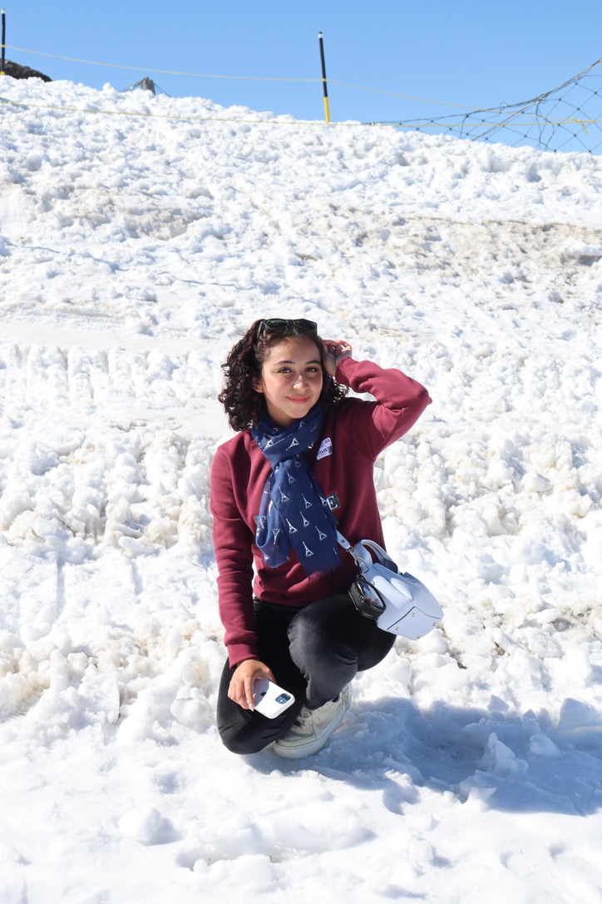
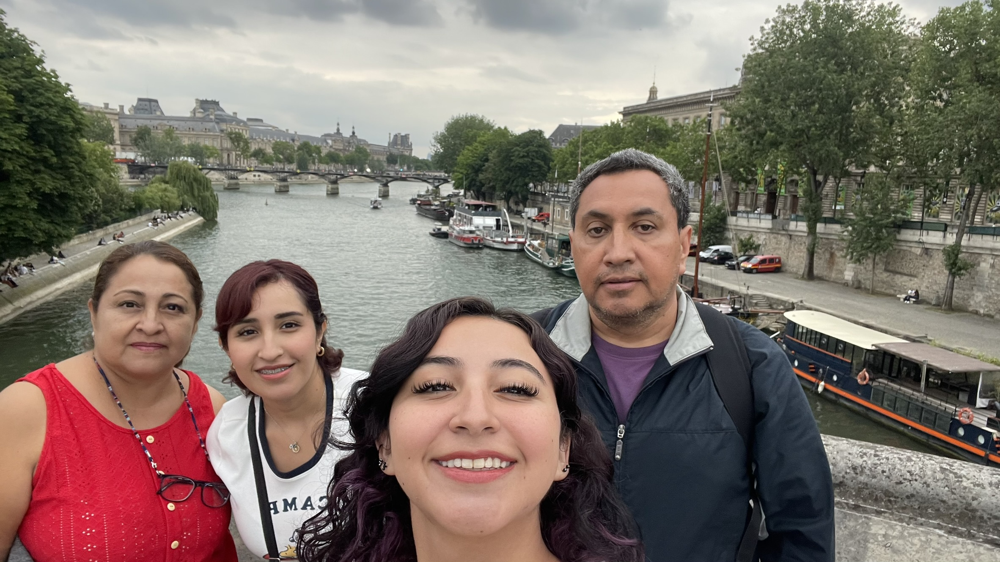

¿Quién soy yo?
Soy Paola Durán Kuri, nací en Puebla y soy una diseñadora gráfica de 21 años.
Actualmente me encuentro cursando mi séptimo semestre y realizando mi servicio social.
Además de la licenciatura en Diseño Gráfico, me encuento cursando Lengua extranjera del idioma Italiano en el nivel 8 en la facultad de Lenguas extranjeras, HUMBOL.
Me encanta salir y viajar, en mi último viaje fuí 18 días a Europa para conocer diferentes países y ciudades.
Mi familia
Creo que mi familia es mi soporte, con mi mamá Veronica, mi papa Luis, mi hermana mayor Mónica y mi perrita Kira, también soy cercana a mis abuelas de ambos lados de la familia, hace un año perdí a mi único abuelo, lo que a algunos nos unió y a otros nos separó.
